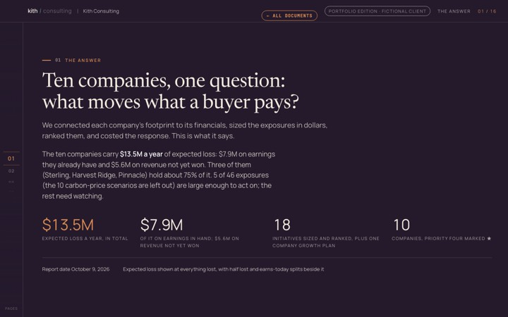
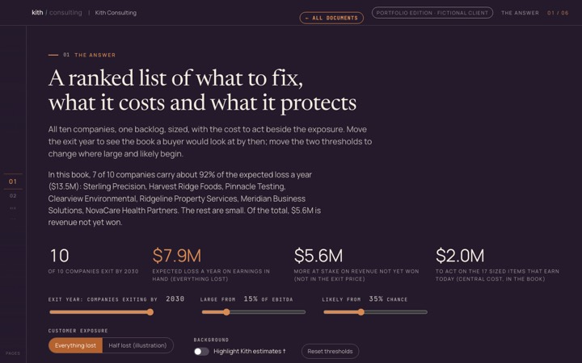
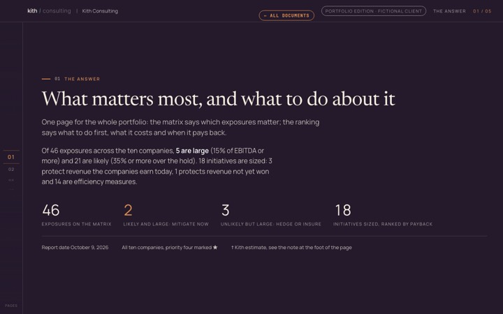

Week 4 of 6, Kith Climate cohort
Materiality and initiatives
Which climate exposures at Northwood's ten companies actually move what a buyer pays, and what should Northwood do about them first?
Highlights

Client deck
The answer on page 1, then where the exposure sits, what to do first and how far to trust each figure.
Open
Explorer
A reader can move the exit year and the thresholds and watch the ranked backlog and the matrix change.
Open
Materiality matrix and initiatives
Every exposure placed against Northwood's own cut-offs, with the ranked initiatives, their cost and payback.
OpenThe case
Northwood needed to know which climate exposures matter to EBITDA and exit price, in dollars. I connected each company's Week 3 footprint to its financials, sized six exposures per company, placed them on a materiality matrix and ranked 18 initiatives.
The ten companies carry $13.5M a year of expected loss, and three of them hold about 75% of it. Only 5 of 46 exposures are large enough to act on. The cheapest fix is answering customers' carbon-data requests, which costs about $117K against up to $8.7M a year of expected loss reduced.
All deliverables
Each opens in a new tab, in the Kith Consulting style it was delivered in.
- Week 4 portalThe entry page: six documents and the data files, with a suggested reading order.
- Client deckThirteen pages with the answer first, then a short note on how it was built and checked.
- ExplorerOne ranked backlog of exposures and initiatives, with exit year and thresholds you can move.
- Exposure modelSix exposure lines per company in dollars a year, each graded for how well it is evidenced.
- Materiality matrix and initiativesThe matrix, the top initiatives per company and the full ranked list.
- Data bookWhat each data file shows and how to read it, including the simulated water and site baseline.
- Re-run guideHow Northwood updates the work next quarter with no help from Kith.
Data and method
The method notes, data and re-run steps that let the client reproduce the work without us.
- Data files guideMarkdownDefines the files and columns, including that the carbon expected-loss column is not a carbon cost.
- Connected datasetCSVEach company's footprint beside its revenue, EBITDA, multiple and remaining hold.
- Connected dataset lineageCSVWhere each value in the connected dataset came from, with a grade.
- Exposure linesCSVEvery exposure line per company, with impact, chance and expected loss.
- Exposure summaryCSVExpected loss by company.
- Materiality matrixCSVEach exposure's place on the matrix.
- Matrix summaryCSVCounts per matrix cell.
- InitiativesCSVThe sized initiatives with cost, payback and value.
- Initiative rankingCSVThe ranked backlog.
- Value protectedCSVWhat each initiative protects.
- Simulated water and site baselineCSVSimulated Harvest Ridge values, labelled and kept apart from every other figure.
- Revision benchmarksCSVThe published benchmarks behind the cost estimates.
- Revision validationCSVCross-checks of those estimates.
- Delivery lineageCSVWhich source file each delivered page was built from.
How it was built
- I started from the Week 3 emissions and the data room's financials, and the footprint carried over matches exactly (23,437 t for the full year; 21,778 t over the ownership period).
- Each company got six exposure lines (weather, energy price, insurance, supplier concentration, customer data requests, carbon price). Expected loss is the impact times the yearly chance. Every figure has a grade A, B or C; 51 of the 56 dollar lines are Kith estimates and are marked with a dagger.
- Where the data room was silent I used published benchmarks and cross-checked them. The cross-check on lighting paybacks held for 2 of 2 companies; it was not possible for solar or HVAC, and the deck says so.
- The build had 87 check scripts, and each check names a deliberately wrong input it must reject. 54 completion checks were run along the way, 23 of them failed before the work was fixed; the last run passed 16 of 16.
- Independent reviewers read it in four roles (method, evidence, audience, process) and raised 38 findings in the last round, all fixed. The handoff states a clean-folder re-run rebuilds all 77 delivered outputs byte for byte.
My part
- I set the scope and order of work: do the five brief deliverables first, treat the brief's numbers as illustrative and take financials from the data room.
- I fixed the report date, the financial basis and which outside datasets could be downloaded.
- I approved the process changes when the review cycle proved too heavy.
- I approved recording conflicting monthly figures as they stand rather than resolving them.
The AI's part
- Claude built the connected dataset, the exposure model, the matrix, the ranking and the explorer, using 24 scripts run in a fixed order.
- Claude wrote the check scripts and the tests that try to break them.
- Claude ran the independent reviewers, applied their fixes, and found that two tests named superseded files and so could not fail.
- Reviewers caught that Ridgeline's $120,000 hail loss belonged to the building owner, and that one saving used an unnamed fuel price instead of the signed one. Both were corrected.
Across the engagement
From Week 3. Week 3's carbon inventory supplied each company's Scope 1 and 2 footprint, carried over unchanged, and its financial basis. Week 4 put dollars next to it.
Into Week 5. The exit timing and hold years here fed Week 5's physical-risk model. Note the two expected-loss headlines differ in scope: $13.5M a year here covers all exposure lines including customer what-ifs, while Week 5's $6.04M a year is physical hazards only. Week 6 later found the 'carbon' column in the data files is mostly the customer line, which the data guide now says.